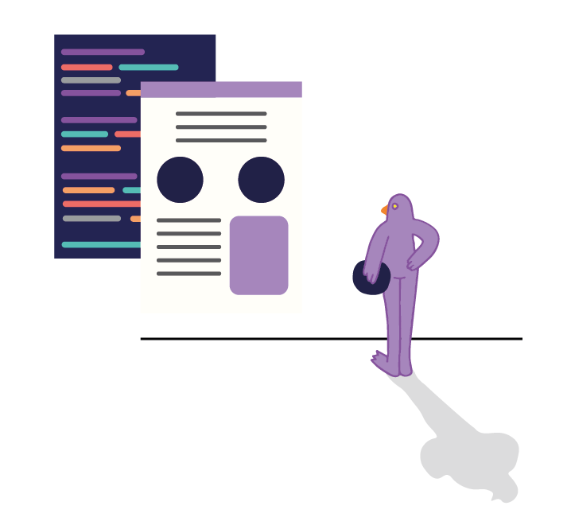
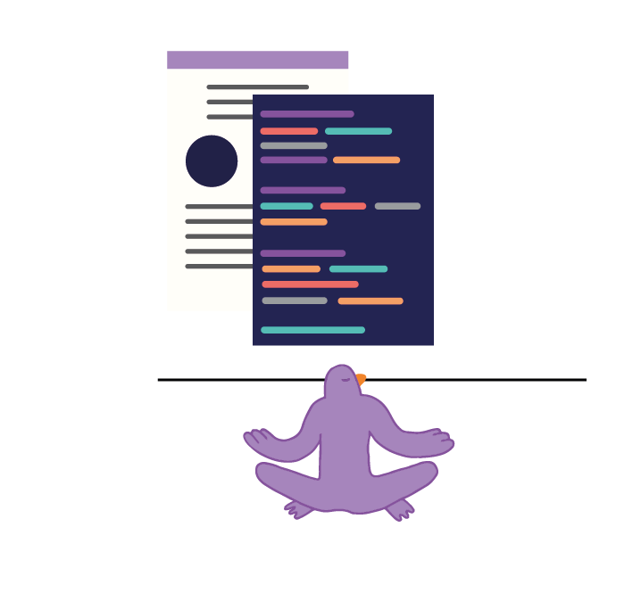
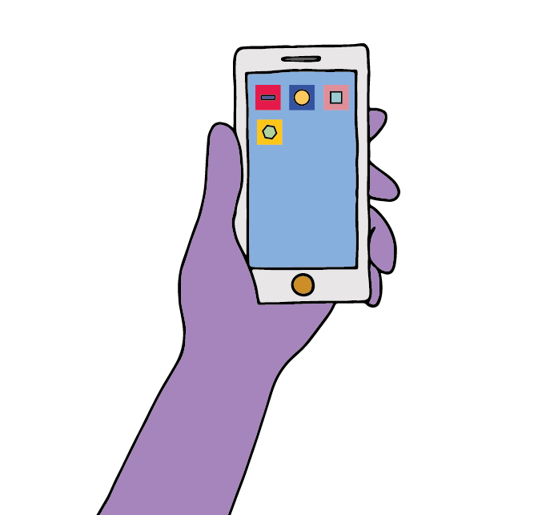

Dan ben je bij TechTeach aan het juiste adres! Tijdens onze TechTeach avonden wordt er op verschillende niveaus en over verschillende onderwerpen in de IT kennis doorgegeven. Laagdrempeligheid en verscheidenheid staan voorop: iedereen met elke achtergrond is welkom!
Professionele TechTeachers bieden waar nodig ondersteuning, daarnaast is er de mogelijkheid als cursist door te groeien tot TechTeacher. Door deze toegankelijke manier van leren wordt het voor iedereen mogelijk iets (bij) te leren over software ontwikkelen.
Als vrijwilliger bij TechTeach aan de slag? Ook dan ben je welkom bij ons! TechTeach is een non-profitorganisatie met als doel de diversiteit in de IT-sector te vergroten.
In dit programma leer je websites ontwikkelen volgens de laatste standaarden en trends op het gebied van web development.
Een frontend ontwikkelaar vormt de verbinding tussen de grafisch ontwerper, die het ontwerp voor de website maakt, en de backend ontwikkelaar, die de logica inbouwt om de acties van gebruikers op je website af te handelen. Vandaag de dag is de rol van een frontend ontwikkelaar veelzijdig en creatief door alle verschillende apparaten waarmee gebruikers je applicatie bezoeken, zoals smartphones, tablets en ‘gewone’ browsers.
In dit programma leer je HTML, CSS en Javascript. HTML bevat de basis bouwstenen voor een website, met CSS kun je HTML meer opmaak geven en JavaScript dient voor het interactief maken van je pagina, dynamisch inladen van nieuwe informatie en snel visuele feedback kunnen geven aan je gebruikers.
In dit programma leer je het bouwen van de logica die achter een website leeft. Denk bijvoorbeeld aan het boeken van een vlucht; de gebruiker klikt op een website op ‘boeken’ en de backend gaat vervolgens aan de slag om de boeking door te voeren, op te slaan en bevestigingen te versturen, bijvoorbeeld per email.
Als backend ontwikkelaar bouw je de logica om alle binnenkomende gegevens van gebruiker te valideren, opslaan in structuren en uit te lezen. Tevens gebruik je vaak externe systemen om bijvoorbeeld email of notificaties te kunnen versturen.
In dit programma leer je de basis van de programmeertaal Java. Vervolgens ga je een web backend ontwikkelen die kan reageren op verschillende verzoeken vanuit het web. De backend zal data gaan lezen en schrijven in een opslag systeem; een database genaamd PostgreSQL.
Smartphone apps zijn tegenwoordig erg populair en veel bedrijven hebben hun eigen app voor klanten en/of medewerkers. Daarom leer je in dit programma hoe je een app bouwt voor Android telefoons.
Als Android app ontwikkelaar werk je voornamelijk met de programmeertaal Java. Je zal naast Java verschillende onderdelen van de Android Software Development Kit (Android SDK) gaan gebruiken om verschillende onderdelen van een telefoon te kunnen gebruiken. Voor een app maak je zowel de interface, datgene wat je kunt zien van een app, als de achterliggende logica.
In dit programma leer je de basis van Java en de Android SDK. We zullen gebruik maken van een simulator om de app te bouwen en uit te proberen.
Wil je vrijblijvend een TechTeach avond bijwonen? Check onderstaande data en kom leren programmeren. Laat je inspireren door onze TechTeacers en ontdek jouw verborgen talenten.
Aanmelden kan via onze facebookpagina maar is niet verplicht. En als je er dan toch bent: like onze pagina en blijf op de hoogte van TechTeach nieuwtjes!
12 december
Tijd: 19.00 tot 21:30
Plaats: TBA
19 december
Tijd: 19:00 tot 21:30
Plaats: TBA
9 januari
Tijd: 19:00 tot 21:30
Plaats: TBA
16 januari
Tijd: 19:00 tot 21:30
Plaats: TBA
23 januari
Tijd: 19:00 tot 21:30
Plaats: TBA
30 januari
Tijd: 19:00 tot 21:30
Plaats: TBA